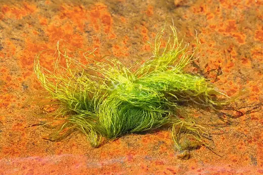

Gutweed
Gutweed is a wild green you can forage from March to October across Ireland. Bright green, hollow, tube-like seaweed in rock pools and on mud where fresh water meets the sea.

When is gutweed in season in Ireland?
Gutweed is usually in season March to October. Timing shifts with weather, latitude and altitude.
Where does gutweed grow in Ireland?
Gutweed grows across Ireland. Regions: Munster, Leinster, Connacht, Ulster (Republic).
How do you recognise gutweed?
Bright green, hollow, tube-like seaweed in rock pools and on mud where fresh water meets the sea.
How do you harvest gutweed?
Pinch off young tips and top leaves before the plant flowers, when they are tender and mild. Leave the roots and lower leaves so it regrows. Pick away from roads, sprayed verges and dog-walking paths.
How do you eat gutweed?
Deep-fried crispy as 'seaweed', or dried as aonori flakes.
How do you store gutweed?
Dry.
What is gutweed good for?
Iron & calcium, Vitamin A.
What can you cook with gutweed?
- Crispy fried gutweed: Dried gutweed flash-fried crisp.